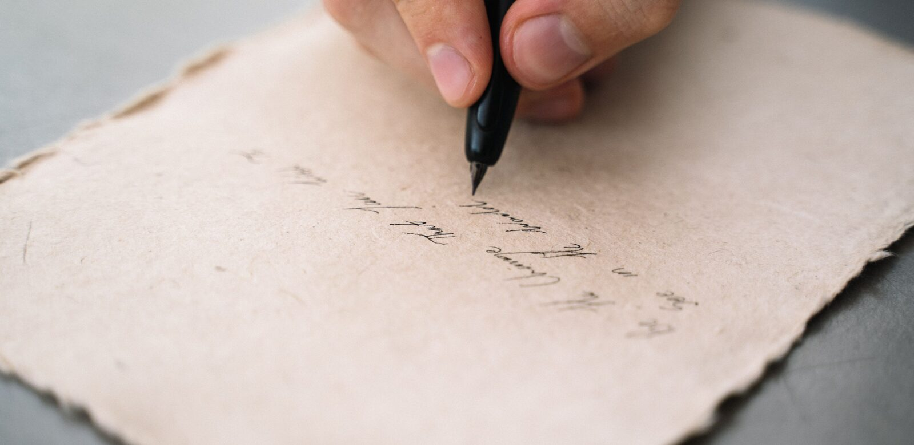

Sinterklaasgedicht over superhelden: 8 voorbeelden en rijmwoorden
Acht gedichten die je kunt overnemen, elk twaalf regels, en bij elk gedicht staat welke twee regels je zelf moet veranderen. Daaronder een rijmtabel per held, want de helft van alle heldennamen rijmt op niets en dat is precies waar je vastloopt.

In het kort
Dit zijn de acht. Klik op een naam om naar het gedicht te springen. Ze zijn allemaal geschreven in de stem van Sinterklaas en Piet, ze noemen geen van alle het cadeau bij naam, en ze zijn vrij te gebruiken en aan te passen.
| Held | Voor wie | Lengte | Waar het over gaat |
|---|---|---|---|
| Spider-Man | 4 tot 8 jaar | 12 regels | klimmen, hangen en niets laten vallen |
| Batman | 6 tot 10 jaar | 12 regels | doorzetten zonder superkracht |
| Iron Man | 6 tot 10 jaar | 12 regels | bouwen, uitvinden en repareren |
| Hulk | 4 tot 8 jaar | 12 regels | boos worden en weer bijdraaien |
| Wonder Woman | 5 tot 10 jaar | 12 regels | opkomen voor een ander |
| Superman | 4 tot 9 jaar | 12 regels | vliegen, helpen en gewoon blijven |
| Captain America | 6 tot 10 jaar | 12 regels | een afspraak nakomen |
| Thor | 5 tot 9 jaar | 12 regels | hard, hard, en toch voorzichtig |
De datum die telt is niet 5 december. Op de meeste basisscholen worden de lootjes in de tweede helft van november getrokken en gaan de surprises in de eerste week van december mee naar school, vaak al op 3 of 4 december. Het gedicht schrijf je als laatste, als het cadeau in de surprise zit, want pas dan weet je waar je naar kunt hinten.
Hoe een sinterklaasgedicht in elkaar zit
Bijna elk gedicht dat werkt, heeft dezelfde vier delen, en in die volgorde. Alle acht hieronder zijn zo gebouwd, dus je kunt ze ook als mal gebruiken voor een held die er niet bij staat.
- Twee regels van de Sint, niet van jou. Begin met iets wat Sinterklaas gezien, gelezen of van Piet gehoord heeft. Dat is de reden dat het gedicht bestaat, en het houdt jou als schrijver buiten beeld.
- Vier tot acht regels over het kind. Hier staat de held naast iets wat het kind echt doet: klimmen, bouwen, boos worden, opruimen. Dit is het deel dat je moet aanpassen, en het is het enige deel dat er echt toe doet.
- Twee regels die naar het cadeau wijzen. Zeg wat je ermee doet, nooit wat het is. Bouwen, erop slaan, mee naar buiten nemen: dat mag allemaal. Het woord zelf niet.
- Twee regels om af te sluiten. Een opdracht om uit te pakken, een grapje, of een waarschuwing van Piet. Daarna de ondertekening, altijd van Sint en Piet samen.
Rijm in paren en tel de klemtonen, niet de lettergrepen. Twee regels die op elkaar rijmen, dan twee nieuwe: dat is het schema van alle acht hieronder. Of een regel loopt, hoor je door hem hardop te lezen en te tikken op de nadruk. Vier tikken per regel klinkt goed, drie ook. Een regel die je moet haasten om erin te passen, is te lang.
Rijmwoorden per held
Dit is waar het schrijven meestal stilvalt. Hulk, Wonder Woman en Captain America rijmen op vrijwel niets, en dan is de oplossing niet harder zoeken maar op iets anders rijmen: op het voorwerp, op de kracht of op het woord held. Deze tabel staat hier voor precies dat moment.
| Woord | Rijmt op | Zo gebruik je het |
|---|---|---|
| Spider-Man, Batman, Superman, Iron Man | man, dan, kan, plan, ban, span, Jan, fan, an | De makkelijkste namen van allemaal. Let op dat je niet vier regels achter elkaar op man laat eindigen. |
| spin | kin, in, zin, begin, win, gezin, tin | Bruikbaar als je Spider-Man zelf niet in het rijm wil zetten. |
| web | heb, eb, schep, stap er niet in | Lastig. Zet web liever midden in de regel en rijm op iets anders. |
| held | geld, veld, meld, verteld, gesteld, snelt, smelt | Het bruikbaarste woord van de hele lijst, bij elke held. |
| kracht | nacht, acht, wacht, zacht, lacht, bracht, gedacht, macht | Het tweede werkpaard. Bijna elk gedicht heeft hier genoeg aan. |
| Thor | door, hoor, voor, spoor, oor, koor, kantoor | Een van de weinige heldennamen die echt lekker rijmt. |
| hamer | kamer, examen niet, blamer niet | Alleen kamer is bruikbaar, en dat is meteen een goede: op je kamer. |
| schild | wild, mild, gild, tilt, stilt | Handig bij Captain America, want die naam zelf rijmt op niets. |
| pak | dak, zak, vak, bak, tak, gemak, strak | Voor het verkleedpak of voor het pakje zelf. |
| Hulk | bijna niets | Rijm hier op groen: doen, schoen, zoen, toen, fatsoen. Dat werkt wel. |
| Wonder Woman | bijna niets | Rijm op lasso, op kracht of op vrouw: nou, jou, gauw, touw, trouw. |
| Wakanda (Black Panther) | panda, veranda, Oeganda, propaganda | Eén van deze vier is altijd goed voor een lach. |
| Sint | kind, wind, vindt, bemint, begint, gezind | De klassieke eerste rijmklank van elk gedicht. |
| Piet | niet, ziet, riet, verdriet, geniet, biedt, lied | De klassieke tweede. Samen met Sint red je er al vier regels mee. |
Twee vuistregels erbij. Zet het moeilijke woord in het midden van de regel en laat de regel eindigen op iets makkelijks: niet zo sterk als de Hulk aan het eind, maar zo groen als de Hulk werd hij toen. En gebruik dezelfde rijmklank hoogstens twee keer in een gedicht, anders gaat het dreunen.
1. Een gedicht over Spider-Man
Klimmen, hangen en niets laten vallen. Dit gedicht is 12 regels lang en past bij een kind van 4 tot 8 jaar. Meer over deze held staat op de pagina over Spider-Man.
Sinterklaas las in zijn grote boek
en Piet keek mee over zijn schouder.
Hier staat er een die klimmen kan,
zei Sint, en die wordt elk jaar stouter.
Niet stout in de zin van vervelend hoor,
maar stout zoals Spider-Man dat is:
je hangt aan de leuning, je springt van de bank
en je vangt wat een ander laat vallen of mist.
Wat er in dit pakje zit, zeggen wij niet,
dat mag je vanavond zelf gaan ontdekken.
Maar Piet zei erbij: hij sleept het een week mee rond
en dan moet je het er weer af zien te trekken.Veel plezier ermee,
Sint en Piet
Wat je zelf aanpast: Vervang regel zeven door iets wat het kind echt doet. Hoe gewoner het voorbeeld, hoe harder er gelachen wordt.
2. Een gedicht over Batman
Doorzetten zonder superkracht. Dit gedicht is 12 regels lang en past bij een kind van 6 tot 10 jaar. Meer over deze held staat op de pagina over Batman.
In Gotham City is het altijd nacht
en hier in Nederland vriest het licht.
Toch heeft de Sint van Piet gehoord
dat jij daar vaak nog wakker ligt.
Je bent niet bang, je bent juist degene
die luistert of er beneden iets kraakt.
Je weet hoe je stil een kamer in loopt
en je hebt altijd een plan klaar gemaakt.
Daarom koos Piet iets uit voor een held
die het zonder toverkracht moet doen.
Want Batman kan niet vliegen of bliksemen,
die is gewoon iemand die doorzet. Veel plezier ermee.Veel plezier ermee,
Sint en Piet
Wat je zelf aanpast: Batman is de held voor het kind dat niet de sterkste is maar wel de slimste. Zet dat in het gedicht, dan gaat het over het kind en niet over de film.
3. Een gedicht over Iron Man
Bouwen, uitvinden en repareren. Dit gedicht is 12 regels lang en past bij een kind van 6 tot 10 jaar. Meer over deze held staat op de pagina over Iron Man.
Sint kreeg een brief van een bezorgde Piet:
er ligt op zolder een hoop gereedschap.
Er staan drie dozen half uit elkaar
en een lamp die knippert bij elke stap.
Sinterklaas keek en hij moest lachen,
want zo begon Tony Stark ook ooit:
met rommel, een schroevendraaier en tijd,
en iets wat volgens iedereen niet lukken zou.
Dus zocht hij iets uit wat je zelf in elkaar zet.
Niet af, dat zou veel te makkelijk zijn.
Er zit een handleiding bij, maar eerlijk gezegd
lees jij die toch pas als het misging.Veel plezier ermee,
Sint en Piet
Wat je zelf aanpast: Deze werkt bij elk cadeau dat het kind zelf moet bouwen. Noem in regel drie iets wat er bij jullie thuis echt half uit elkaar ligt.
4. Een gedicht over Hulk
Boos worden en weer bijdraaien. Dit gedicht is 12 regels lang en past bij een kind van 4 tot 8 jaar. Meer over deze held staat op de pagina over Hulk.
De Hulk wordt groen als hij boos wordt,
en jij wordt dan meestal heel stil.
Je stampt een keer hard op de trap
en daarna is het weer zoals je wil.
Sint vindt dat eerlijk gezegd niet erg,
want boos zijn mag, dat hoort erbij.
Het gaat erom wat je daarna doet,
en daarin lijk jij niet op hem, maar op mij.
Dit pakje is groot, maar niet zo groot
als de vuist waar de Hulk mee slaat.
Pak het daarom rustig en voorzichtig uit,
zodat er vanavond niets kapotgaat.Veel plezier ermee,
Sint en Piet
Wat je zelf aanpast: Een gedicht over boos worden werkt alleen als het niet plaagt. Laat het kind aan het eind gelijk krijgen, nooit de Sint.
5. Een gedicht over Wonder Woman
Opkomen voor een ander. Dit gedicht is 12 regels lang en past bij een kind van 5 tot 10 jaar. Meer over deze held staat op de pagina over Wonder Woman.
Piet vertelde de Sint over school,
over iets op het plein, vorige maand.
Er stond iemand alleen bij het hek
en jij bent er gewoon naast gaan staan.
De Sint schreef dat op in zijn boek,
want dat is precies wat Wonder Woman doet.
Zij vecht niet omdat vechten leuk is,
zij vecht als het echt even moet.
Wat er in dit pakje zit is niet zwaar
en het schittert ook niet van het goud.
Maar het is wel voor iemand met lef,
en dat is waarom Sint van jou houdt.Veel plezier ermee,
Sint en Piet
Wat je zelf aanpast: Verwijs naar iets echts van dit jaar. Een gedicht dat iets noemt wat alleen jullie weten, wordt bewaard.
6. Een gedicht over Superman
Vliegen, helpen en gewoon blijven. Dit gedicht is 12 regels lang en past bij een kind van 4 tot 9 jaar. Meer over deze held staat op de pagina over Superman.
Superman kwam van een andere planeet
en groeide hier op als gewoon kind.
Overdag deed hij normaal tegen iedereen,
's nachts vloog hij mee met de wind.
Sinterklaas dacht daaraan bij jouw naam,
want jij hebt dat ook een beetje:
thuis ben je rustig en aan tafel beleefd,
en buiten ben jij degene die het hardste leeft.
Daarom zit hier iets in wat past bij allebei.
Binnen kun je ermee op de bank,
en buiten kun je ermee doen wat jij wil,
en beide keren zeg je netjes dank.Veel plezier ermee,
Sint en Piet
Wat je zelf aanpast: Superman past bij het kind dat thuis en buiten twee verschillende kinderen is. Ouders herkennen dat meteen.
7. Een gedicht over Captain America
Een afspraak nakomen. Dit gedicht is 12 regels lang en past bij een kind van 6 tot 10 jaar. Meer over deze held staat op de pagina over Captain America.
De Sint houdt van mensen die doen wat ze zeggen,
en jij bent daar dit jaar goed in geweest.
Je zei dat je zou opruimen na het spelen
en dat deed je ook, bijna elke keer.
Captain America heeft geen raketten,
geen pak dat oplicht, geen enkele straal.
Hij heeft alleen een schild en een afspraak,
en daarmee wint hij toch bijna altijd.
Dus koos Piet iets stevigs uit, iets wat blijft,
niets wat na twee dagen al breekt.
Want een cadeau mag wat Sint betreft best
net zo betrouwbaar zijn als jij deze week.Veel plezier ermee,
Sint en Piet
Wat je zelf aanpast: Gebruik deze als het kind ergens trots op mag zijn. Noem de afspraak concreet, dan is het gedicht meteen persoonlijk.
8. Een gedicht over Thor
Hard, hard, en toch voorzichtig. Dit gedicht is 12 regels lang en past bij een kind van 5 tot 9 jaar. Meer over deze held staat op de pagina over Thor.
Er was in de hemel wat onweer geweest,
Piet dacht: daar komt de storm door de deur.
Maar het was jouw hamer op de keukenvloer,
en de buurvrouw schrok zich een kleur.
Thor slaat hard, dat is waar, maar hij mikt,
hij gooit dat ding niet zomaar in het wild.
Hij weet precies waar zijn hamer moet zijn
en hij vangt hem weer op, rustig en mild.
Dat mikken, daar mag jij nog aan werken.
Dus zit er iets in wat wel tegen een stoot kan.
Sla er gerust mee, zei Sinterklaas nog,
maar alsjeblieft niet op de trapleuning of de kraan.Veel plezier ermee,
Sint en Piet
Wat je zelf aanpast: Werkt het best als er thuis echt iets gesneuveld is. Noem het voorwerp, niet het kind.
Het gedicht aanpassen aan de leeftijd
Vier tot zes jaar. Acht regels is genoeg en korte regels lezen prettiger voor. Hou het bij één ding dat het kind doet en laat de grap eruit als die uitleg nodig heeft. Op deze leeftijd wordt het gedicht meestal voorgelezen terwijl het kind al aan het papier trekt, dus de eerste vier regels zijn de enige die echt gehoord worden.
Zes tot acht jaar. Twaalf regels, zoals de acht hierboven. Dit is de leeftijd waarop het kind meeleest en zelf ontdekt dat het over hem gaat, dus hier loont het om iets van school of van de vakantie te noemen. Plagen mag, zolang het kind aan het eind gelijk krijgt.
Acht tot twaalf jaar. Zestien regels mag, en hier mag de hint naar het cadeau echt moeilijk zijn. Op deze leeftijd is het raden de helft van de lol. Dit is ook de leeftijd van de schoolsurprise met lootjes, en dan schrijf je voor een klasgenoot: hou het dan bij iets wat iedereen in de klas weet, niet bij iets van thuis.
👪 Tip voor ouders
Laat het kind dat kan schrijven zelf een gedicht maken voor iemand anders, en doe het samen aan tafel met deze pagina ernaast. Twee dingen helpen daarbij meer dan alle rijmwoorden bij elkaar. Laat het eerst vertellen wat het over die persoon wil zeggen, in gewone zinnen, en maak daar pas daarna regels van: andersom gaat het gedicht over het rijm in plaats van over de persoon. En schrijf de laatste versie met de hand over op gewoon papier. Een uitgeprint gedicht wordt na pakjesavond weggegooid, een geschreven gedicht bijna nooit.
Wat wij niet zouden doen
Het cadeau noemen. Dit is de fout die het vaakst gemaakt wordt en hij kost het gedicht zijn hele reden van bestaan. Zodra er in regel zes staat wat erin zit, luistert niemand meer naar regel zeven. Hint naar wat je ermee doet en zeg nooit wat het is.
Plagen over iets waar het kind niet om kan lachen. Een gedicht mag ergens over gaan wat misging, maar dan moet het kind aan het eind gelijk krijgen en niet de Sint. Over een cijfer op school, over gewicht of over iets waar het kind dit jaar echt verdriet van heeft gehad, schrijf je niet. Op pakjesavond zit de hele familie mee te luisteren en dat maakt een plagerij groter dan hij bedoeld was.
Een rijmwoord kiezen dat het kind niet kent. Woorden als bemint, gezind en menigeen komen in bijna elk sinterklaasgedicht voor, en kinderen begrijpen ze niet. Een regel die klopt maar niet begrepen wordt, is een lege regel. Kies dan liever een regel die net niet rijmt.
Zestien regels schrijven omdat het dan meer lijkt. Twaalf regels voorlezen duurt een halve minuut en dat is precies lang genoeg. Bij een lang gedicht gaat de rest van de kamer praten voordat het uit is, en dan hoort het kind het einde niet.
Een gedicht uit een generator overnemen zonder er iets aan te doen. Dat valt op, ook bij een kind van zes, omdat er niets in staat wat alleen over hem gaat. De acht hieronder hebben hetzelfde probleem zolang je ze letterlijk overneemt: daarom staat er bij elk gedicht wat je zelf moet veranderen, en dat zijn maar twee regels.
Het cadeau en de verpakking
Het gedicht is het laatste onderdeel van drie. Zoek je nog een cadeau, dan staan onze keuzes in de leukste superhelden cadeaus voor Sinterklaas, of bij superhelden schoencadeautjes als het in de schoen moet. Twijfel je over de leeftijd, kijk dan bij welk superhelden cadeau bij welke leeftijd past. En moet er een surprise omheen, dan staan er zes met stappenplan in superhelden surprise maken.
Een gedicht hoort bij een surprise en niet bij een cadeau dat gewoon in papier zit. Dat is geen regel maar het scheelt teleurstelling: op school worden ze voorgelezen, thuis op pakjesavond meestal niet.
Veelgestelde vragen
Hoe lang moet een sinterklaasgedicht zijn? Acht tot zestien regels. Alle acht de gedichten hierboven zijn twaalf regels, en dat is niet toevallig: dat is ongeveer een halve minuut voorlezen. Korter voelt als een kaartje, langer en de rest van de kamer haakt af. Voor een kind van vier of vijf mag je gerust op acht regels gaan zitten.
Wat rijmt er op Spiderman? Man, dan, kan, plan, ban, span, fan en de naam Jan. Datzelfde rijtje werkt meteen ook voor Batman, Superman en Iron Man, want die eindigen allemaal op dezelfde klank. Wil je variatie, rijm dan op spin: kin, in, zin, begin en win. In de rijmtabel hierboven staat per held waar je terecht kunt, ook bij de namen die op niets rijmen zoals Hulk en Wonder Woman.
Hoe begin je een sinterklaasgedicht? Met iets wat de Sint gezien of gehoord heeft, niet met het cadeau. Sinterklaas las in zijn grote boek, Piet vertelde over school, er kwam een brief binnen: in alle acht de voorbeelden hierboven gebeurt dat in de eerste twee regels. Daarna komt het kind, daarna pas het pakje, en de laatste twee regels gaan over het uitpakken.
Mag je een sinterklaasgedicht van internet overnemen? Dat mag, en de acht op deze pagina zijn daar ook voor bedoeld: ze zijn door ons geschreven en je mag ze vrij gebruiken en aanpassen. Verander wel minstens twee regels in iets wat alleen bij dit kind past, iets van school, van vakantie of van thuis. Dat ene zinnetje is het verschil tussen een gedicht dat wordt weggelegd en een gedicht dat in de la blijft liggen.
Verklap je in het gedicht wat het cadeau is? Nee. Hint ernaar en noem het nooit. Alle acht hierboven zeggen wel iets over wat je ermee doet, bouwen, klimmen, erop slaan, en geen enkele zegt wat het is. Dat is precies de spanning waar het gedicht voor bedoeld is, en die is in één regel weg.
Wanneer schrijf je het gedicht? Als de surprise af is en het cadeau erin zit, dus meestal de avond ervoor. Dat klinkt laat maar het is de juiste volgorde: pas dan weet je wat je kunt hinten. Op school gaan de surprises vaak al op 3 of 4 december mee, dus reken vanaf die dag terug en niet vanaf 5 december.
Hoe wij deze acht geschreven hebben
De acht gedichten op deze pagina zijn in september 2026 door ons zelf geschreven, speciaal voor deze pagina. Ze staan nergens anders en je mag ze vrij overnemen, aanpassen en voorlezen. Er zit geen enkele regel in die uit een film of een boek komt, want zinnen uit films zijn van hun makers en die zetten wij niet op een pagina die je mag kopiëren.
De keuze voor deze acht helden volgt de pagina's die op Heldenshop het meest gelezen worden, met daarnaast een spreiding over waar het gedicht over gaat: klimmen, doorzetten, bouwen, boos worden, opkomen voor een ander, gewoon blijven, een afspraak nakomen en mikken. Zo staat er voor bijna elk kind iets tussen dat ergens op slaat, en dat is belangrijker dan de vraag welke held het populairst is.
De rijmtabel is met de hand samengesteld en op één punt eerlijk: bij Hulk en Wonder Woman staat er dat er bijna niets op rijmt, want dat is zo, en een lijst met gezochte rijmwoorden zou je daar alleen maar langer laten doorzoeken.
💡 Wist je dat?
Het sinterklaasgedicht hoort bij de surprise en bij het lootjes trekken, en is daarmee vooral een traditie voor oudere kinderen en volwassenen. Jonge kinderen krijgen hun cadeaus gewoon van Sinterklaas zelf, en dan hoort er geen gedicht bij maar hoogstens een briefje. Het gedicht schrijf je altijd in de wij-vorm, alsof Sint en Piet het samen hebben opgeschreven, en daarom staat er onder alle acht hierboven dezelfde ondertekening.
Wil je verder? Kijk bij superhelden surprise maken voor de verpakking eromheen, of bij welke adventskalender voor kinderen als je de weken naar kerst toe ook wil vullen.